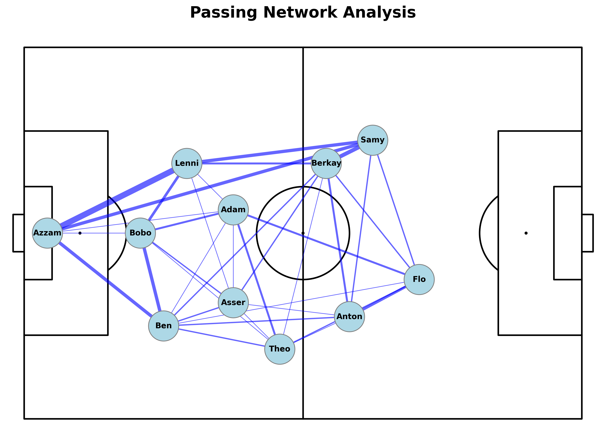
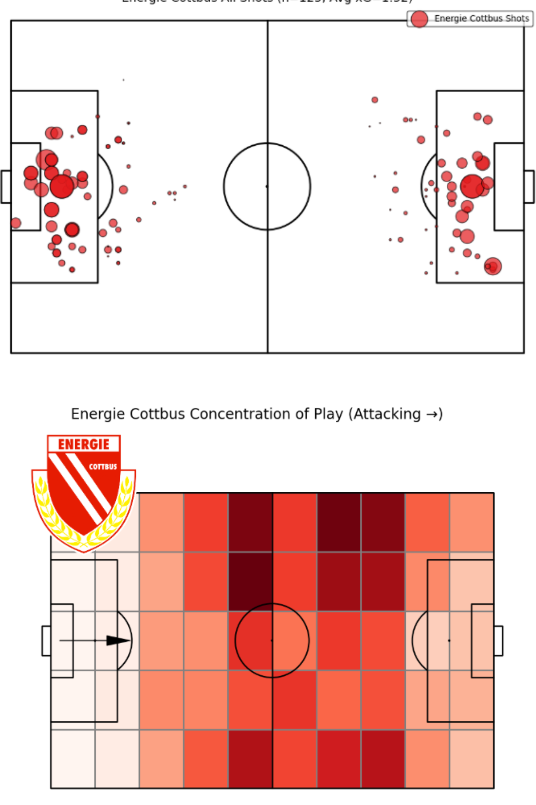
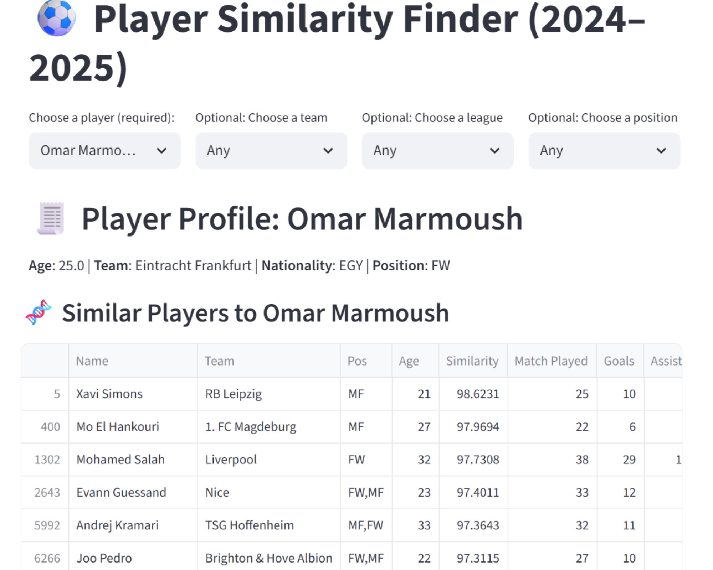

Qussai Elbackoush: Football Data Analyst
Portfolio
A Data Analyst specializing in applied football performance, utilizing Python and advanced data pipelines to deliver actionable tactical and strategic insights.
Skills: Python (Pandas, mplsoccer, Streamlit), SQL, Data Cleaning/Wrangling, xG Modeling, Tableau/Power BI. .

This project shows my end-to-end data management capability. I personally generated event data from raw match video (LongoMatch), then used Python (Pandas) to handle the complex cleaning, standardization, and structuring required to create robust datasets for coaching staff.
View Project

Developed a Python pipeline to analyze the last 10 matches of the 3. Liga season. This automated workflow calculates Expected Goals (xG), identifies concentration of play, and analyzes shot frequency per 15-minute interval, providing deep tactical insights into performance across match phases.

A working web application built using Streamlit that aids the statistical scouting process. The app utilizes data clustering and metric profiling to identify players with similar attributes to elite targets, streamlining recruitment and providing objective assistance to Scouting team.

Analyzed the Euro 2024 final between Spain and England. Explored passing networks and shot maps to understand game dynamics.